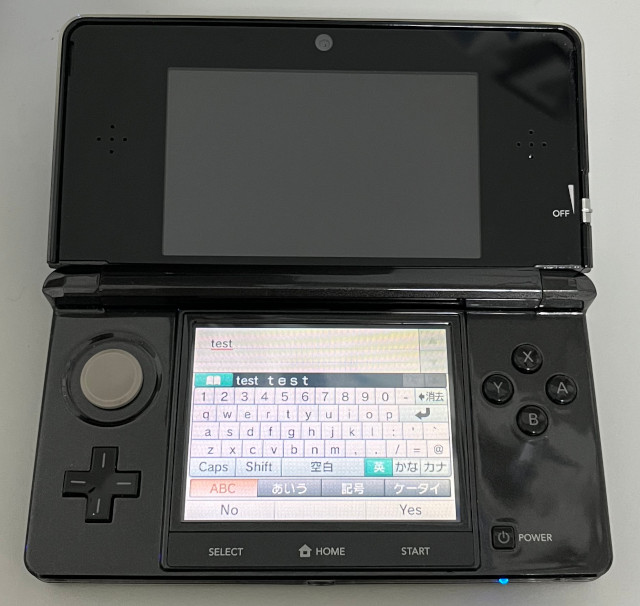
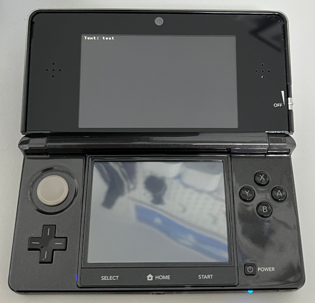

參考資訊：
https://hub.docker.com/r/greatwizard/devkitarm-3ds
main.c
#include <3ds.h>
#include <stdio.h>
#include <string.h>
int main(void)
{
char mybuf[255] = { 0 };
SwkbdState swkbd = { 0 };
SwkbdButton button = SWKBD_BUTTON_NONE;
gfxInitDefault();
consoleInit(GFX_TOP, NULL);
swkbdInit(&swkbd, SWKBD_TYPE_NORMAL, 3, -1);
swkbdSetInitialText(&swkbd, mybuf);
swkbdSetHintText(&swkbd, "Please input your text");
swkbdSetButton(&swkbd, SWKBD_BUTTON_LEFT, "No", false);
swkbdSetButton(&swkbd, SWKBD_BUTTON_MIDDLE, " ", true);
swkbdSetButton(&swkbd, SWKBD_BUTTON_RIGHT, "Yes", true);
swkbdSetFeatures(&swkbd, SWKBD_PREDICTIVE_INPUT);
button = swkbdInputText(&swkbd, mybuf, sizeof(mybuf));
if (button != SWKBD_BUTTON_NONE) {
printf("Text: %s\n", mybuf);
}
gfxFlushBuffers();
gfxSwapBuffers();
gspWaitForVBlank();
svcSleepThread(3000000000LL);
gfxExit();
return 0;
}
完成

